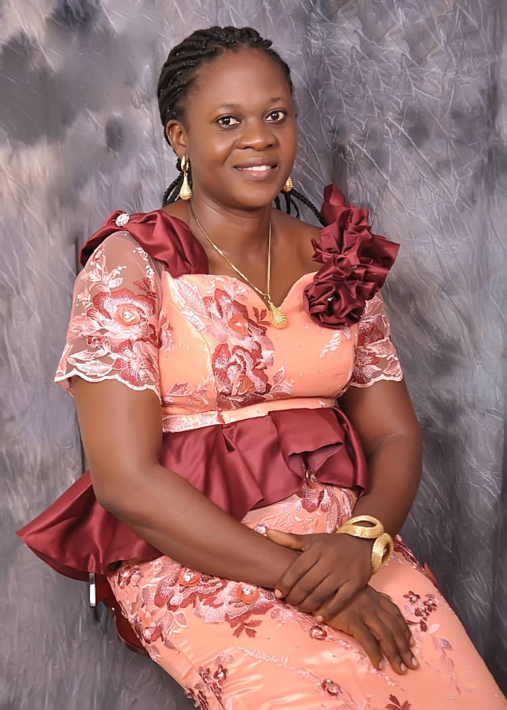

<!DOCTYPE html>
<html lang="en">
<head>
    <meta charset="UTF-8">
    <meta name="viewport" content="width=device-width, initial-scale=1.0">
    <title>About</title>
    <style>
        *{
            text-align: center;
            background-color: beige;
        }
        h1{
            color:antiquewhite;
            background-color: aliceblue;
            
        }
        img{
            float: left;
        }
        h2{
            clear: left;
        }
    </style>
</head>
<body>
    
</body>
</html>
<h1>
    About Her
</h1>

<p>
    Mrs. Ruth Joseph is the CEO and Founder of Divine Joes Air BnB. She graduated from Ferderal Polythecnic, Bida, Niger state with a degree in Business Administration. She is a single mother with two children. She is an innovative woman with the intention of making the world a better place.
</p>
<h2>
    About Divine Joes BnB
</h2>
<P>
    Divine Joes air BnB is located at Block 15 Flat 1, Cross River street, Garki, Abuja, Nigeria. It features awesome facilities and amazing amenities. 
    Divine Joes Air BnB has 7 rooms that are decorated with grace and comfort. The rooms are epuipped with an air conditioner,flat screen Television set with satellite channels(Dstv), in-room safe, blackout curtains/drapes and an en-suite bathroom with free toiletries and a shower. 
</P>
<p>
    It offers complimentary breakfast between 8AM and 11AM and a variety of meals and drinks which can be ordered or prepared for you from the on-site kitchen  and enjoyed in a spacious dining room. Free wifi is available. 
</p>
<p>
    Divine Joes Air BnB also offers services such as 24-hour front desk and airport shuttle services.<br>
    <h3> Interesting places near Divine Joes Air BnB</h3>
    Millenium Park(6.5km)<br>
    Silverbird cinemas(5.2km)<br>
    Magicland Amusement Park(5.6km)<br>
    Jabi lake Mall(13km) 
</p>
<h3>Terms and Conditions</h3>
Booking should be done at least a day before<br>
Cancellation should be done a day before<br>
Children: All children are allowed<br>
Pets: pets are not allowed<br>
Payment: Card and Cash Payments<br>
<a href="./contact.html"> BOOK NOW!!!</a>